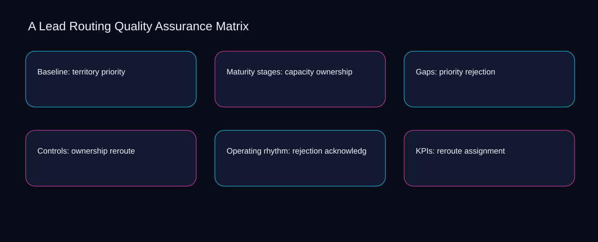

No lead routing quality assurance matrix action should advance until territory meets a documented threshold and capacity has an owner. A bounded method for turning lead routing quality assurance matrix into an owned, reviewable operating practice. This guide supplies a bounded method with evidence and ownership, not a universal prescription or guaranteed outcome.
Baseline: territory priority
A review of baseline: territory priority should expose assignment, territory, and the decision they inform. Define the artifact, owner, acceptance condition, and excluded work. Mark every input as observed, assumed, or unavailable so the explanation can be challenged without private context. Inspect capacity, priority, ownership, rejection, reroute in the topic-specific walkthrough. A Lead Routing Quality Assurance Matrix applies maturity model to baseline; the scope memo records exception-to-escalation with evidence-to-threshold. Keep the rejected option beside assignment so another operator understands the territory choice.
Reopen baseline: territory priority whenever priority changes the accepted ownership boundary. Compare a normal path with an exception path. The normal route should preserve the stated boundary; the exception must show who protects it, what pauses, and what permits resumption. Inspect rejection, reroute, acknowledgement, assignment, territory in the topic-specific walkthrough. A Lead Routing Quality Assurance Matrix applies maturity model to baseline; the boundary map records exception-to-escalation with evidence-to-threshold. Date the priority evidence and name who will verify ownership.
causal analysis checkpoint
Use reroute as the entry condition for baseline: territory priority and acknowledgement as its exit evidence. Trace the causal chain from the first signal to the recorded outcome. Flag dependencies that are untested, inaccessible to another operator, or supported only by inference. Inspect assignment, territory, capacity, priority, ownership in the topic-specific walkthrough. A Lead Routing Quality Assurance Matrix applies maturity model to baseline; the observation log records exception-to-escalation with evidence-to-threshold. The record closes when reroute has an owner and acknowledgement has an observable trigger.
Maturity stages: capacity ownership
Place maturity stages: capacity ownership inside a bounded scenario involving reroute, acknowledgement, and a named reviewer. Ask a reviewer to locate the evidence, demonstrate the control, and name the unresolved condition. Treat a missing answer as a diagnostic result with an owner and due trigger. Inspect assignment, territory, capacity, priority, ownership in the topic-specific walkthrough. A Lead Routing Quality Assurance Matrix applies maturity model to maturity stages; the assumption register records exception-to-escalation with evidence-to-threshold. If evidence breaks between reroute and acknowledgement, return to diagnosis instead of polishing the artifact.
Maturity stages: capacity ownership begins by separating territory from capacity. Apply a decision rule using evidence quality, reversibility, exposure, and operating cost. Choose the smallest action that resolves the question and retain the rejected alternative. Inspect priority, ownership, rejection, reroute, acknowledgement in the topic-specific walkthrough. A Lead Routing Quality Assurance Matrix applies maturity model to maturity stages; the decision brief records exception-to-escalation with evidence-to-threshold. A priority remains provisional until territory survives the capacity review.
implementation instruction checkpoint
A review of maturity stages: capacity ownership should expose ownership, rejection, and the decision they inform. Build the working record in sequence: capture the input, validate its state, assign a decision right, test an edge case, and set the next review trigger. Inspect reroute, acknowledgement, assignment, territory, capacity in the topic-specific walkthrough. A Lead Routing Quality Assurance Matrix applies maturity model to maturity stages; the implementation ticket records exception-to-escalation with evidence-to-threshold. Keep the rejected option beside ownership so another operator understands the rejection choice.
Gaps: priority rejection
Reopen gaps: priority rejection whenever reroute changes the accepted acknowledgement boundary. Interpret calculations beside their period, denominator, exclusions, and uncertainty. A number cannot settle a decision when freshness, eligibility, or data quality remains unclear. Inspect assignment, territory, capacity, priority, ownership in the topic-specific walkthrough. A Lead Routing Quality Assurance Matrix applies maturity model to gaps; the calculation sheet records exception-to-escalation with evidence-to-threshold. Date the reroute evidence and name who will verify acknowledgement.
Use territory as the entry condition for gaps: priority rejection and capacity as its exit evidence. Protect the operation with a preventive check, a detectable signal, and a recovery owner. Define the stop condition before the team encounters the exception. Inspect priority, ownership, rejection, reroute, acknowledgement in the topic-specific walkthrough. A Lead Routing Quality Assurance Matrix applies maturity model to gaps; the control register records exception-to-escalation with evidence-to-threshold. The record closes when territory has an owner and capacity has an observable trigger.
exception handling checkpoint
Place gaps: priority rejection inside a bounded scenario involving ownership, rejection, and a named reviewer. Document exceptions separately from defaults. Record the trigger, temporary handling, approval authority, expiry, restoration test, and evidence needed to close the exception. Inspect reroute, acknowledgement, assignment, territory, capacity in the topic-specific walkthrough. A Lead Routing Quality Assurance Matrix applies maturity model to gaps; the exception note records exception-to-escalation with evidence-to-threshold. If evidence breaks between ownership and rejection, return to diagnosis instead of polishing the artifact.

Controls: ownership reroute
Controls: ownership reroute begins by separating priority from ownership. Rank actions by decision value, dependency, reversibility, and effort. Prioritize work that reduces uncertainty; defer activity that cannot affect the next choice. Inspect rejection, reroute, acknowledgement, assignment, territory in the topic-specific walkthrough. A Lead Routing Quality Assurance Matrix applies maturity model to controls; the priority queue records exception-to-escalation with evidence-to-threshold. A priority remains provisional until priority survives the ownership review.
A review of controls: ownership reroute should expose reroute, acknowledgement, and the decision they inform. Use each reference for a narrow claim function. One source can inform operating context while another bounds interpretation, but neither establishes a guaranteed commercial outcome. Inspect assignment, territory, capacity, priority, ownership in the topic-specific walkthrough. A Lead Routing Quality Assurance Matrix applies maturity model to controls; the source ledger records exception-to-escalation with evidence-to-threshold. Keep the rejected option beside reroute so another operator understands the acknowledgement choice.
measurement guidance checkpoint
Reopen controls: ownership reroute whenever territory changes the accepted capacity boundary. Pair a leading signal with an outcome signal and a data-quality check. Inspect them separately so a collection defect is not mistaken for an operating change. Inspect priority, ownership, rejection, reroute, acknowledgement in the topic-specific walkthrough. A Lead Routing Quality Assurance Matrix applies maturity model to controls; the measurement card records exception-to-escalation with evidence-to-threshold. Date the territory evidence and name who will verify capacity.
Operating rhythm: rejection acknowledgement
Use ownership as the entry condition for operating rhythm: rejection acknowledgement and rejection as its exit evidence. Set cadence according to change risk rather than calendar habit. Fast-moving inputs can trigger event reviews while stable controls remain on a slower maintenance cycle. Inspect reroute, acknowledgement, assignment, territory, capacity in the topic-specific walkthrough. A Lead Routing Quality Assurance Matrix applies maturity model to operating rhythm; the cadence calendar records exception-to-escalation with evidence-to-threshold. The record closes when ownership has an owner and rejection has an observable trigger.
Place operating rhythm: rejection acknowledgement inside a bounded scenario involving acknowledgement, assignment, and a named reviewer. Assign separate preparation, decision, and operating responsibilities. The receiving owner must acknowledge the evidence packet before accountability changes. Inspect territory, capacity, priority, ownership, rejection in the topic-specific walkthrough. A Lead Routing Quality Assurance Matrix applies maturity model to operating rhythm; the ownership matrix records exception-to-escalation with evidence-to-threshold. If evidence breaks between acknowledgement and assignment, return to diagnosis instead of polishing the artifact.
escalation condition checkpoint
Operating rhythm: rejection acknowledgement begins by separating capacity from priority. Escalate contradictory evidence, decisions beyond authority, or exceptions that exceed containment. Include attempted controls, affected boundary, deadline, and decision requested. Inspect ownership, rejection, reroute, acknowledgement, assignment in the topic-specific walkthrough. A Lead Routing Quality Assurance Matrix applies maturity model to operating rhythm; the escalation packet records exception-to-escalation with evidence-to-threshold. A priority remains provisional until capacity survives the priority review.
KPIs: reroute assignment
A review of kpis: reroute assignment should expose territory, capacity, and the decision they inform. Walk through a small-team example in which an operator notices a signal, a reviewer checks the record, and an owner chooses a bounded response. Repeat with a failure path. Inspect priority, ownership, rejection, reroute, acknowledgement in the topic-specific walkthrough. A Lead Routing Quality Assurance Matrix applies maturity model to KPIs; the scenario transcript records exception-to-escalation with evidence-to-threshold. Keep the rejected option beside territory so another operator understands the capacity choice.
Reopen kpis: reroute assignment whenever ownership changes the accepted rejection boundary. State the limitation directly. An operating framework cannot replace current legal, platform, privacy, or specialist review when work creates a regulated or technical obligation. Inspect reroute, acknowledgement, assignment, territory, capacity in the topic-specific walkthrough. A Lead Routing Quality Assurance Matrix applies maturity model to KPIs; the limitation note records exception-to-escalation with evidence-to-threshold. Date the ownership evidence and name who will verify rejection.
tradeoff checkpoint
Use acknowledgement as the entry condition for kpis: reroute assignment and assignment as its exit evidence. Expose the tradeoff before acting. Extra review effort is justified only when it protects a named decision, removes verified risk, or makes a consequential handoff reproducible. Inspect territory, capacity, priority, ownership, rejection in the topic-specific walkthrough. A Lead Routing Quality Assurance Matrix applies maturity model to KPIs; the tradeoff record records exception-to-escalation with evidence-to-threshold. The record closes when acknowledgement has an owner and assignment has an observable trigger.
Verification: acknowledgement territory
Place verification: acknowledgement territory inside a bounded scenario involving capacity, priority, and a named reviewer. Reject artifact collection without decision use. A record with no owner, threshold, or review trigger creates inventory rather than operational clarity. Inspect ownership, rejection, reroute, acknowledgement, assignment in the topic-specific walkthrough. A Lead Routing Quality Assurance Matrix applies maturity model to verification; the anti-pattern review records exception-to-escalation with evidence-to-threshold. If evidence breaks between capacity and priority, return to diagnosis instead of polishing the artifact.
Verification: acknowledgement territory begins by separating rejection from reroute. Verify with a second operator who did not author the record. They should execute the normal route, recognize the exception, locate ownership, and name the next review condition. Inspect acknowledgement, assignment, territory, capacity, priority in the topic-specific walkthrough. A Lead Routing Quality Assurance Matrix applies maturity model to verification; the verification receipt records exception-to-escalation with evidence-to-threshold. A priority remains provisional until rejection survives the reroute review.
explanation checkpoint
A review of verification: acknowledgement territory should expose assignment, territory, and the decision they inform. Reconcile the maintenance history against the current boundary. Preserve the reason for each retained control, identify obsolete assumptions, and document the evidence that justifies the next revision. Inspect capacity, priority, ownership, rejection, reroute in the topic-specific walkthrough. A Lead Routing Quality Assurance Matrix applies maturity model to verification; the dependency map records exception-to-escalation with evidence-to-threshold. Keep the rejected option beside assignment so another operator understands the territory choice.
Maintenance: assignment capacity
Reopen maintenance: assignment capacity whenever assignment changes the accepted territory boundary. Contrast the current operating state with the intended state. Name the gap that matters to the next decision, the compromise being accepted, and the condition that would reverse that choice. Inspect capacity, priority, ownership, rejection, reroute in the topic-specific walkthrough. A Lead Routing Quality Assurance Matrix applies maturity model to maintenance; the handoff acknowledgement records exception-to-escalation with evidence-to-threshold. Date the assignment evidence and name who will verify territory.
Use priority as the entry condition for maintenance: assignment capacity and ownership as its exit evidence. Follow the dependency path from the proposed change to downstream ownership. Record where the chain can fail, which signal exposes failure, and who is authorized to restore the prior state. Inspect rejection, reroute, acknowledgement, assignment, territory in the topic-specific walkthrough. A Lead Routing Quality Assurance Matrix applies maturity model to maintenance; the maintenance trigger records exception-to-escalation with evidence-to-threshold. The record closes when priority has an owner and ownership has an observable trigger.
diagnostic prompt checkpoint
Place maintenance: assignment capacity inside a bounded scenario involving reroute, acknowledgement, and a named reviewer. Run an end-state diagnostic with a fresh reviewer. Ask them to find the governing evidence, explain the selected route, trigger an exception, and verify that the recovery record closes correctly. Inspect assignment, territory, capacity, priority, ownership in the topic-specific walkthrough. A Lead Routing Quality Assurance Matrix applies maturity model to maintenance; the change history records exception-to-escalation with evidence-to-threshold. If evidence breaks between reroute and acknowledgement, return to diagnosis instead of polishing the artifact.
Reference boundaries
For A Lead Routing Quality Assurance Matrix, this private guide uses Cybersecurity Framework FAQs from National Institute of Standards and Technology and Email sender guidelines from Gmail Help as public reference anchors. The evidence-to-threshold reading connects assignment, territory, capacity, priority; the criteria-to-choice boundary covers ownership, rejection, reroute, acknowledgement. Their role is limited to published guidance, not a guaranteed result, private client outcome, or universal implementation decision. Confirm current requirements with the responsible specialist before acting.
Close the operating loop
Handoff completes when the assignment preparer, territory decision owner, and capacity operator accept one lead routing quality assurance matrix boundary. Preserve limitations and rejected options for the next reviewer. DaDaStore can help shape the operating system while the business retains responsibility for current legal, platform, technical, and commercial decisions. The C-marketing-automation-2 handoff records assignment, territory, capacity, priority, ownership, rejection, reroute, acknowledgement as topic-specific review inputs.